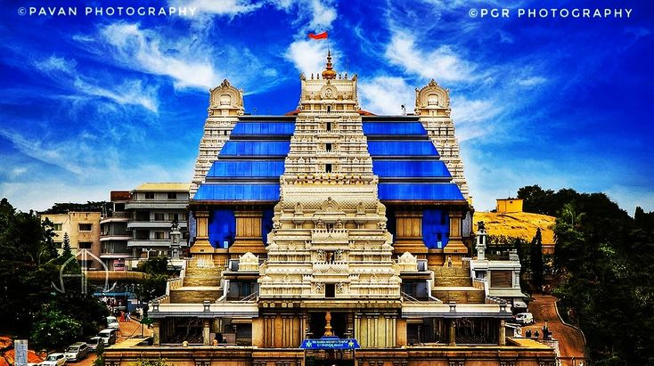
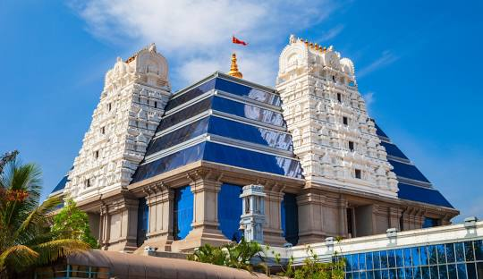

"Find Peace and Spiritual Bliss at ISKCON Bangalore – A Journey for the Soul!"
Located in Bangalore, ISKCON Temple is a major center for Krishna devotion, built in 1997.The temple is part of the International Society for Krishna Consciousness,
dedicated to spreading the teachings of Lord Krishna.
Architectural Beauty
Design: A blend of modern and Vedic styles, featuring a grand dome and intricate carvings.
Lighting and Night View:the building is beautifully illuminated at night and makes for a stunning view, a popular sight for tourists and photographers.
Temple Interiors: Home to beautifully decorated altars of Lord Krishna and Radha.
How To Reach
By Metro: Mahalaxmi metro Station (green Line).
By Bus: Multiple BMTC routes pass by the temple.
By Car: Parking available near entrance.
Events and Festivals
Celebrate Janmashtami, Ratha Yatra, and other ISKCON festivals with processions and cultural performances.
Yoga and Meditation: Join meditation sessions for peace and spiritual growth.
Attend a Lecture: Participate in Bhagavad Gita classes.
Things to Do
Explore the temple Interiors.
Meditate and Reflect: Enjoy the peaceful environment for personal reflection.
Attend a Lecture: Participate in Bhagavad Gita classes.
Explore the Gift Shop: Pick up devotional items.
Nearby Attractions
Bull Temple: A famous temple dedicated to Nandi.
Lalbagh Botanical Garden: Nearby garden for relaxation and nature walks.
Visitor Information
Best Time to Visit: Open year-round; festivals like Janmashtami are especially grand.
Timings: 4:30 AM – 9:00 PM daily.
Visitor Tips
Respect: Keep silence and reverence inside the temple.
Photography: Allowed outside; limited inside.
Donations: Visitors can contribute to temple seva (service) activities.